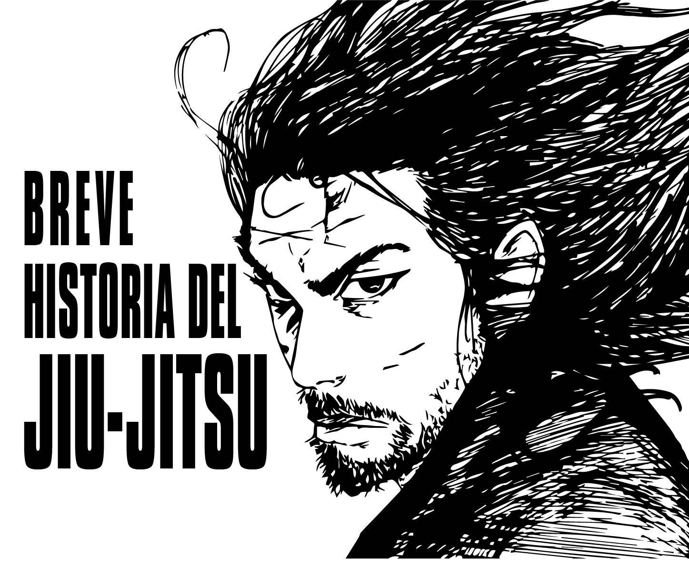
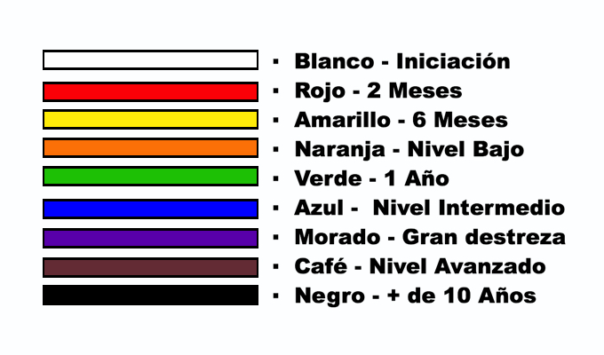

jiu-jitsu
HISTORIA
El Jiu-Jitsu es un arte marcial de origen japonés ideado para que los bushi o samurais pudieran enfrentarse a otros samurais en la lucha cuerpo a cuerpo cuando perdían sus armas en el campo de batalla. A finales del S. XIX, Jigoro Kano, un estudioso del Jiu-Jitsu tradicional, desarrolló en su escuela Kodokan, un arte marcial que sintetizaba las técnicas más eficientes de agarre, proyección, luxación y estrangulación, y creo el Judo. En 1904, Mitsuyo Maeda, alumno directo de Jigoro Kano y uno de los judokas más célebres del Kodokan, inició un peregrinaje marcial por el mundo, donde mostró la eficacia de su estilo marcial enfrentándose a luchadores de todo tipo y saliendo victorioso en todas las contiendas; Incluso mostró sus habilidades en el arte del combate en los teatros de España, donde fue apodado como el Conde Koma. En 1914 Maeda viajó a Belem do Para, Brasil, y se hospedó en la casa de un aristócrata llamado Gastao Gracie. Maeda, como muestra de gratitud por las ayudas recibidas por parte de Gastao, decidió enseñar su arte marcial a Carlos Gracie, hijo de Gastao. Helio Gracie, hermano pequeño de Carlos, se caracterizaba por ser muy endeble y frágil, pero eso no le impidió aprender el arte marcial y desarrollarlo a pesar de sus limitaciones físicas. Helio Gracie quiso mostrar al mundo la eficiencia de su Jiu-Jitsu y se enfrentó a innumerables luchadores de diferentes estilos marciales logrando grandes victorias; aunque el combate más epico que disputó Helio Gracie acabó en derrota ante el célebre judoka, Masahiko Kimura, que le aplicó un ude-garami que le rompió el brazo porque no se rindió. Helio, en honor a este gran judoka, bautizó como Kimura al ude-garami.
CINTURONES
- Blanco: El cinturón blanco es el nivel de iniciación en el jiu jitsu, este no tiene que ganarse como el resto.
- Rojo: El cinturón rojo es el segundo nivel en el jiu-jitsu. Para este necesitaras conocer al menos las técnicas básicas de dicho arte marcial, las cuales podrás aprender en 2 meses aproximadamente.
- Amarillo: El cinturón amarillo es el tercer nivel, a diferencia de en el resto de las artes marciales que suele ser el segundo nivel. En este se suele tardar de 4 a 6 meses para aprender las técnicas necesarias para adquirirlo.
- Naranja: El cinturón naranja es el cuarto nivel en el jiu jitsu. Este será el último que tendrás como aprendiz de bajo nivel.
- Verde: El cinturón verde es el quinto nivel. es el primer cinturón de nivel intermedio. para conseguir este cinturón como mínimo tardaras un año.
- Azul: El cinturón azul es el nivel sexto del jiu-jitsu y el segundo nivel intermedio.
- Morado: El cinturón morado es el que llevaras cuando estés a punto de pasar del nivel intermedio al avanzado. Para obtener este cinturón tienes que tener ya una gran destreza y conocimiento en este arte.
- Café: El cinturón café es el primer nivel avanzado en jiu jitsu.
- Negro: El cinturón de color negro es la clasificación más alta en el jiu-jitsu tradicional. Los poseedores de este cinturón son expertos en este arte, y normalmente se tarda más de 10 años en ser adquirido. 